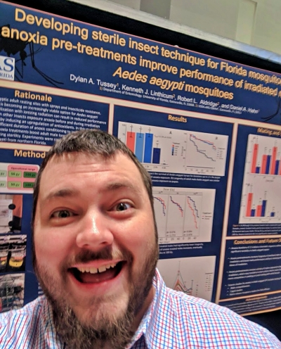

Sections
Publications & Presentations
Publications
Tussey, D.A., Morreale, R., Carvalho, D.O., Stenhouse, S., Lloyd, A.M., Hoel, D.F., and D.A. Hahn. 2023. Developing methods for chilling, compacting, and sterilizing adult Aedes aegypti and comparing mating competitiveness between males sterilized as adults versus pupae for sterile male release. Journal of Medical Entomology (In review).
Tussey, D.A., K.J. Linthicum, and D.A. Hahn. 2022. Does severe hypoxia during irradiation of Aedes aegypti pupae improve sterile male performance? Parasites & Vectors, 15, 446. https://doi.org/10.1186/ s13071-022-05577-0
Walgenbach, J.F., Bilbo, T.R., Tussey, D.A., and E.C. Ogburn. 2020. Comparison of chemigation versus foliar insecticide use: management of lepidopteran larvae and stink bugs in North Carolina field tomatoes with environmental and farmworker benefits. Pest Management Science, 77(2): 758–765.
Hasan, Ma., Hasan, Me., Rahman, S., Athanassiou, C.G., Tussey, D.A., and D.A. Hahn. 2021. Induced dormancy in Indian meal moth Plodia interpunctella (Hübner) and its impact on the quality improvement for mass rearing in parasitoid Habrobracon hebetor (Say). Bulletin of Entomological Research, 112(6), 766–776.
Tussey, D.A., B. H. Aukema, A. M. Charvoz, and R. C. Venette. 2018. Effects of adult feeding and overwintering conditions on energy reserves and flight performance of emerald ash borer (Coleoptera: Buprestidae). Environmental Entomology, 47(3): 755-763.
Parker, C., Bernaola, L., Lee, B.W., Elmquist, D., Cohen, A., Marshall, A., Hepler, J., Pekarcik, A., … and D.A. Tussey. 2019. Entomology in the 21st Century: Tackling Insect Invasions, Promoting Advancements in Technology, and Using Effective Science Communication—2018 Student Debates, Journal of Insect Science, 19(4): https://doi.org/10.1093/ jisesa/iez069
Selected Presentations

Dylan A. Tussey, Kennith J. Linthicum, Robert L. Aldridge, and Daniel A. Hahn; Hypoxic conditions during irradiation improve sterile male performance in Aedes aegypti. Annual Meeting of the Entomological Society of America. St. Louis, MO, November 18, 2019.
Dylan A. Tussey, Brian H. Aukema, and Robert C. Venette; Sublethal effects of cold on emerald ash borer (Coleoptera: Buprestidae): energy reserves and flight Capacity. XXV International Congress of Entomology. Orlando, FL, September 29, 2016.
Dylan A. Tussey, Brian H. Aukema, and Robert C. Venette; Effects of age and feeding on lipid content and flight capacity of Agrilus planipennis. Annual Meeting of the Entomological Society of America. Minneapolis, MN, November 15-18, 2015.
Dylan A. Tussey, Brian H. Aukema, and Robert C. Venette; Effects of feeding on lipid content and dispersal capability of adult Agrilus planipennis. 64th Annual North Central Forest Pest Workshop. Keshena, WI, September 21-24, 2015.
Dylan A. Tussey and Arthur M. Agnello; Comparative attractiveness of a single-component isomer vs. the racemic blend of a mating pheromone in Prionus root-boring beetle traps. 2012 Summer Scholars Program Undergraduate Research Poster Session. Geneva, NY, July 31, 2012.